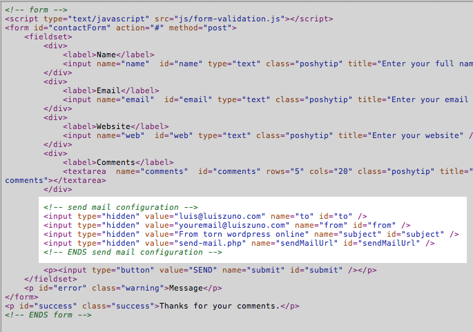

Descriptiontop
Vintage Template is a theme with a responsive design for your creative portfolio. Showcase your work display, blog, videos, image galleries and more. View the online demo
Vintage Template is a theme with a responsive design for your creative portfolio. Showcase your work display, blog, videos, image galleries and more. View the online demo
This theme is a responsive layout theme made in valid HTML 5 markup, its perfect for personal blog/portfolio style websites. Also this site is responsive to all major devices (Tablet and iphone) to date.
The HTML structure for the pages are the a HEADER a #MAIN and a FOOTER inside each of this one is a wrapper to align everything.
This download package contains all the necessary HTML, CSS, JS and Image files necessary to build a complete site. I will post the editable PSD files at my site pretty soon.
For the tooltips i am using a javascript library called poshytip its very easy to set up. The default browser tooltip that displays the value of the title attribute is replaced with a "poshier" version just add a title text and a class of poshytip.
Example
<a href="#" title="I am a tooltip" class="poshytip">Tool tip</a>
<img src="image.jpg" title="I am a tooltip" class="poshytip" alt="Image" />
To set your own google map follow these 3 steps:
1) Go to http://itouchmap.com/latlong.html to get the Latitud and Longitud values from the itouch map app.
2) Edit your "contact.html" file around line #164 and enter the values for the Api key, the Longitude and the Latitude values:
var latlng = new google.maps.LatLng(-34.397, 150.644);
There are 2 files nedded filed needed for the FORM VALIDATION (js/form-validation.js) and the PHP (send-mail.php) that actually sends the data .
The HTML

To set the sender and the recipients just change the value for the hidden input values inside the contact.html.
Form-validation.js This is the javascript validation for the fields.
How to add fields to the contact form:

All the CSS files are stored in a folder named css on the root of the html files.
There's a main css css/style.css with all the styles for the site it also calls different css files that help to reset the styles and some other css files for the social icons and the web elements.
List of css files under the CSS folder:
comments.css
Use this file to edit the visual of the comments on the single.html template page
ie-hacks.css
Just in case a CSS rule don't display correctly on IE.
jquery.tweet.css
To edit the appearance of the tweets
reset.css
Core CSS file needed to display correctly by reseting the default values
social-icons.css
The list of social icons files
style.css
This is the main styles for the whole site, in there you will probably find the most CSS rules for the template
superfish.css
This is a core file for the correct display of the dropdown menu
lessframework.css
This is responsible for the responsiveness depending on the device or browser size.
lofslider.css
Style the home page page image slider.
flexslider.css
Style the project page image slider.
skin.css
If you want to change the colors and backgrounds refer to this file.
elements.css
This one styles all the web elements such accordions, tabs, buttons...
I have included a folder with the LESS files in case you are developer and want to use them instead of the CSS files. You should see this folder named "LESS" on the root folder.
All the graphic elements for the entire theme are contained at the "img" folder. The mockup images used to feed the site are contained at the "img/dummies" folder.
I will post the editable PSD files at my site pretty soon.
All the pages link the neccessary js files inside the "head" tag of the document. If you need to modify the behavior from a certain jquery element open the "js/custom.js" file. where you can alter the parameters of some of the js elements.
To display your own tweets open your js/custom.js file around line #4 and change the username value for yours. That easy!
//##########################################
// Tweet feed
//##########################################
$("#tweets").tweet({
count: 3,
username: "ansimuz"
});
This theme uses work from the following resources: